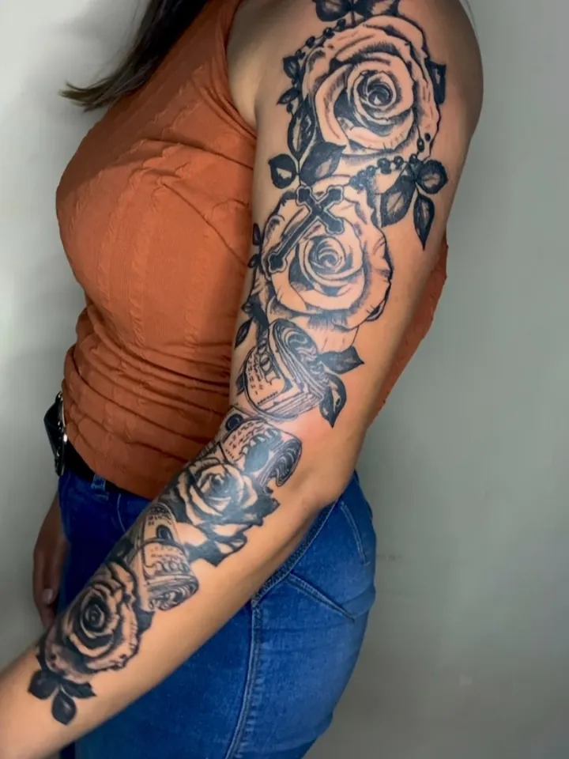
Floral
Rosas, lírios e borboletas em fechamentos que vão do ombro ao pulso.
Blackwork, floral, dark art e lettering. Fechamentos de braço e projetos autorais feitos em estúdio privado, com hora marcada.
01Fechamento floral no antebraço
Portfólio
Tatuagens feitas no estúdio nos últimos meses. Toque numa foto para ampliar.
O que eu faço
Quatro linhas de trabalho, todas em preto e cinza, com espaço para um toque de cor quando o projeto pede.

Rosas, lírios e borboletas em fechamentos que vão do ombro ao pulso.
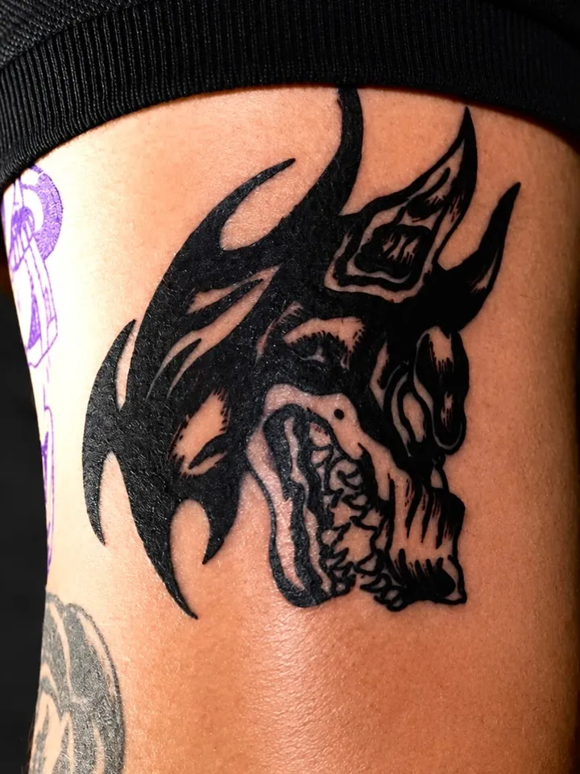
Preto sólido, contraste alto e traço firme, feito para durar na pele.
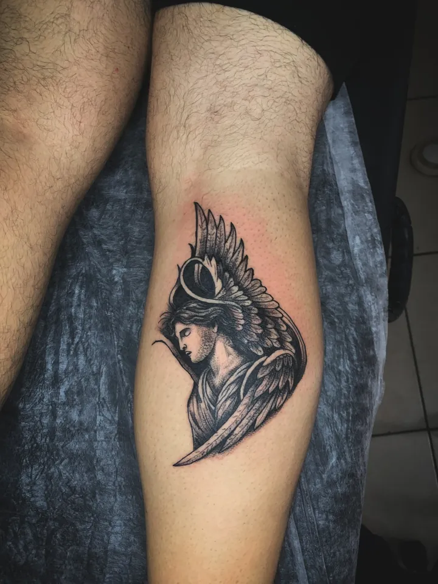
Caveiras, anjos e figuras sombrias com sombreado em preto e cinza.
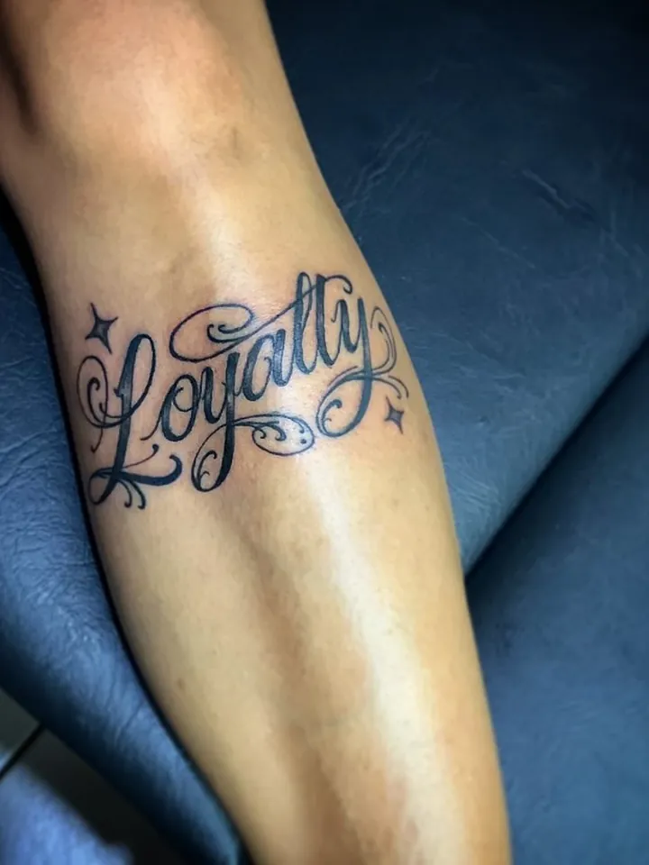
Nomes, datas e frases, do traço fino ao letreiro cheio.
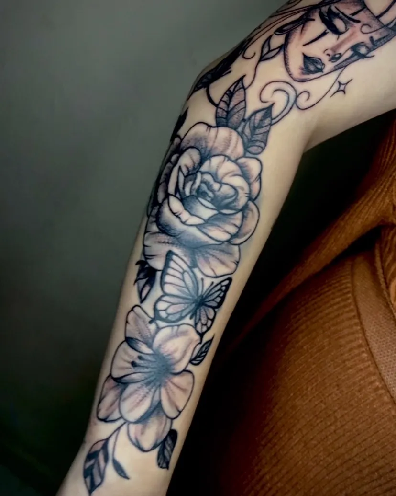
Especialidade
A maior parte da agenda é de fechamentos: braço, antebraço e perna. O desenho é montado para a anatomia de quem vai usar e fechado em sessões.
Também faço reforma e cobertura de tatuagens antigas dentro do fechamento.
Pronto para tatuar
Desenhos prontos da pasta do estúdio. Escolha um, toque nele e mande no WhatsApp com o tamanho e o local.
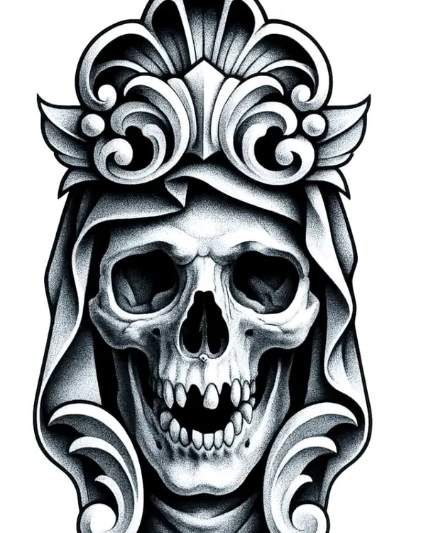
Nº 01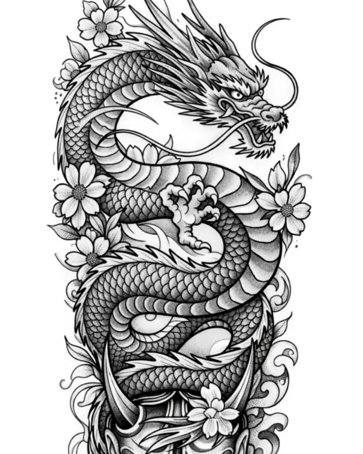
Nº 02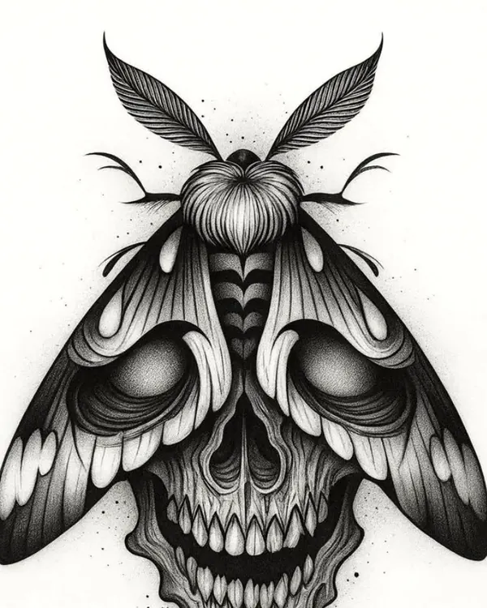
Nº 03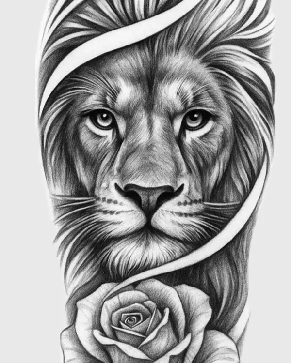
Nº 04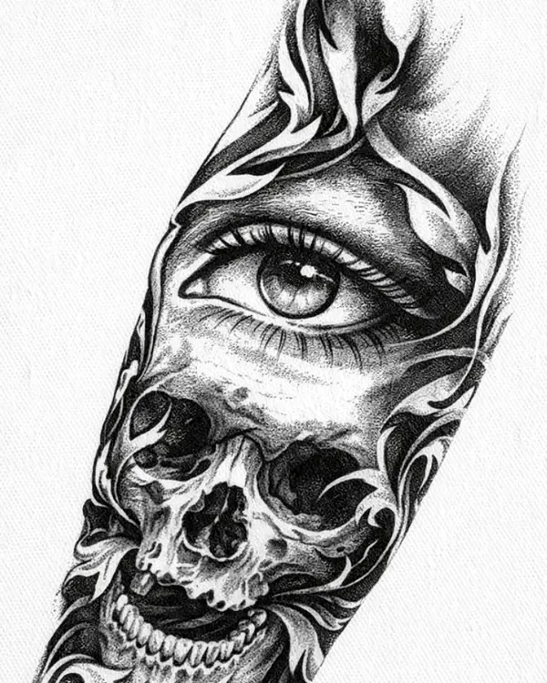
Nº 05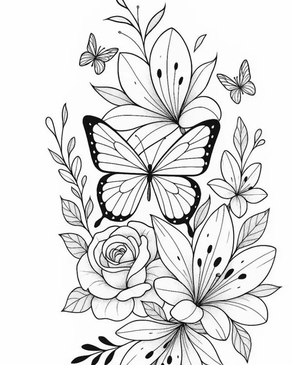
Nº 06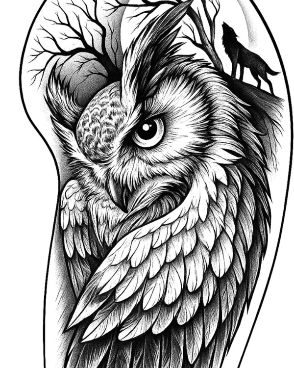
Nº 07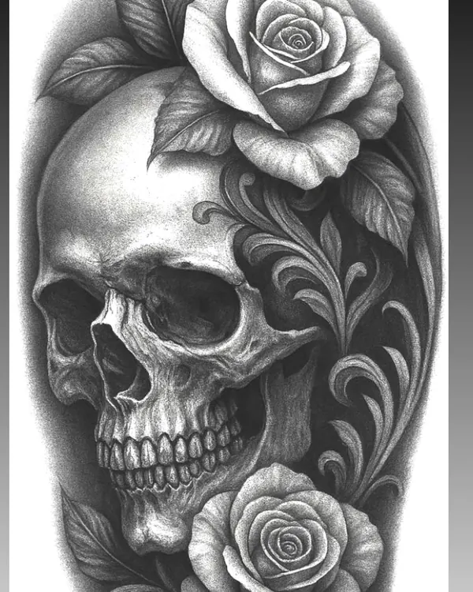
Nº 08Tamanhos maiores e ajustes no desenho são orçados à parte.
O estúdio
O Fragmentado é um estúdio privado em Santa Bárbara d'Oeste. Atendo um cliente por vez, com hora marcada, agulhas e material descartáveis e tudo esterilizado na sua frente.
Recebo gente da cidade e de Piracicaba, Araras e região. Cada projeto é desenhado do zero a partir da sua ideia.
Me traga sua ideia. A gente transforma em arte que conta a sua história.
Levo todo o material e monto o espaço com o mesmo padrão de higiene do estúdio. Consulte a região e a disponibilidade.
Passo a passo
Do primeiro contato até a sessão, tudo pelo WhatsApp ou pelo direct do Instagram.
Referências, local do corpo e tamanho aproximado.
Valor, tempo de sessão e o desenho do projeto.
50% do valor reserva o horário e é descontado no dia.
Chegue alimentado e hidratado. O resto é comigo.
Dúvida sobre valores ou parcelamento? Pergunte no orçamento.
Feedbacks
Fiz o fechamento do braço em três sessões e saiu do jeito que a gente desenhou. Cicatrizou perfeito.
Cheguei só com uma ideia solta e uma frase. Ele montou o desenho todo e explicou cada detalhe antes de começar.
Estúdio limpo, atendimento tranquilo e traço muito firme. Já marquei a próxima.
Antes de marcar
Depende do tamanho, do local do corpo e da quantidade de detalhes. Flash de até 10 cm sai por R$ 120. Para projetos autorais e fechamentos, mande a ideia que eu passo o valor certinho.
Sim. Tatuagem antiga, apagada ou que você não curte mais pode ser reformada ou coberta dentro de um projeto novo. Mande uma foto bem iluminada da tattoo atual.
Você sai do estúdio com as orientações por escrito: lavar com sabonete neutro, hidratar com a pomada indicada, evitar sol, piscina e mar até cicatrizar.
O atendimento é só para maiores de 18 anos, com documento com foto no dia da sessão.
Em Santa Bárbara d'Oeste (SP). Como é um estúdio privado, o endereço completo é enviado depois que o horário é confirmado.
Agenda aberta
Orçamento sem compromisso pelo WhatsApp ou pelo direct. Respondo pessoalmente.